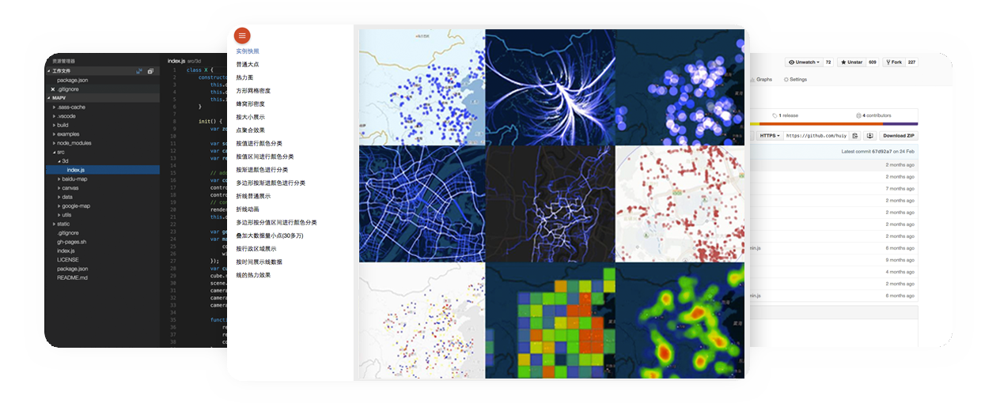

首页
Gallery
Demo
API
GITHUB
V1
地理信息可视化开源库
mapv 让你以最便捷的方式，展示惊艳的数据，Beta版本现已全面开放
使用JS API
JS API
使用JS API，可以很方便的通过JavaScript在您的网站或者任何可以执行JavaScript的高级浏览器中，编写你想要的展示样式，让创意的火花瞬间爆发。

了解更多
MapV online
即便您不知道如何使用JavaScript，MapV online也可以让您简单的通过拖拽、点击鼠标完成炫酷的效果
Beta试用版
联系我们
Github: https://github.com/huiyan-fe/mapv
Email: mapv@baidu.com
Copyright (c) 2016, Baidu, Inc. All rights reserved.